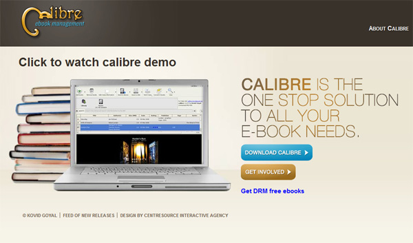
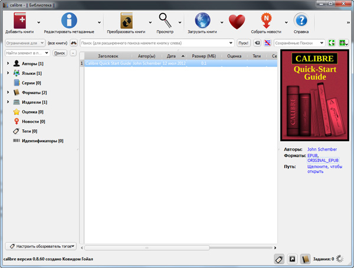
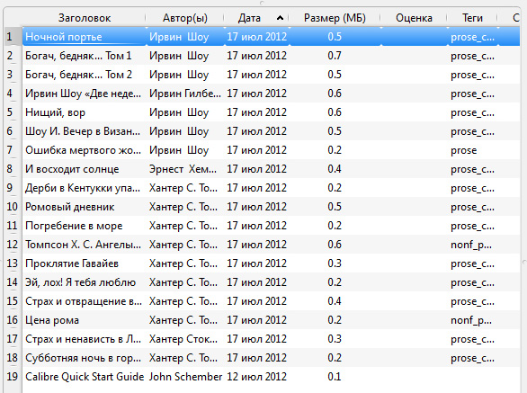
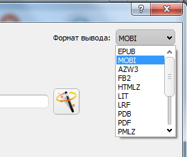
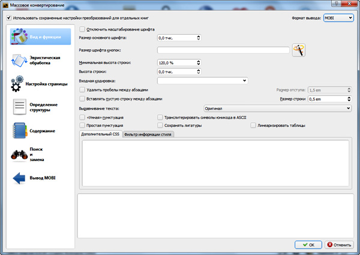
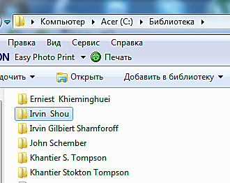
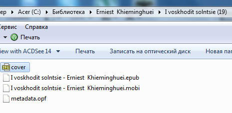
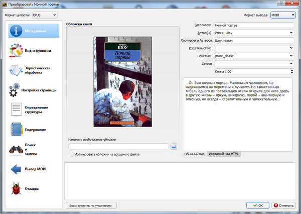
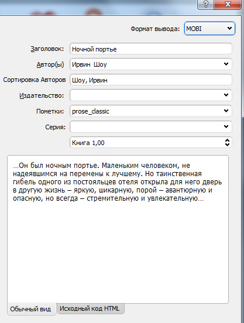

Немного о конвертации электронных книг из одних форматов в другие

В прошлой статье мы поговорили о том, какие форматы электронных книг применяются в тех или иных видах ридеров. Однако нередко бывает так, что у пользователя оказался не тот формат, который ему нужен - ну, мало ли, на сайте библиотеки не предлагались разные форматы, друзья прислали только в одном формате, в наследство досталась электронная библиотека в формате RTF - всякое бывает.
Я уж не говорю о счастливых владельцах ридеров Amazon Kindle (очень неплохих, замечу, ридеров), которые поддерживают только свой собственный формат MOBI (ну и еще традиционные TXT и PDF, которые мало применимы для электронных книг) - вот как тут снискать формат насущный?
Ответ простой. Нужно конвертировать те форматы, которые есть (удалось достать, купить, получить), в тот формат, который вам нужен.
На самом деле в подобной процедуре нет ничего особо сложного, и это в любом случае не больно. Просто пользоваться нужно правильными программами, а точнее - одной-единственной бесплатной программой, которая легко и просто сконвертирует вам почти любой формат электронной книги в любой другой формат. Она может конвертировать как отдельную книгу, так и выбранную папку и даже всю электронную библиотеку скопом. Плюс - при конвертировании вы можете редактировать различные поля книги, добавлять туда нужную вам обложку и так далее.
Впрочем, хватит беллетристики, давайте посмотрим, как это выглядит в деле.
Программа, о которой я говорю, называется Calibre ebook management - вот .

Сайт программы - англоязычный, но не пугайтесь, программа поддерживает интерфейс на целой куче языков, включая русский.
Скачать программу можно - поддерживаются версии под Windows, OS X, Linux и portable под Windows (версия, не требующая установки и ее можно переносить и запускать прямо с флешки).
Скачали, установили. При установке никаких лишних вопросов не задается, за исключением того, какой язык интерфейса вы предпочитаете.
Установленная и запущенная программа выглядит следующим образом.

Вообще у Calibre немало всяких функций - программа умеет вести каталог вашей электронной библиотеки, сортировать и отбирать издания по куче различных критериев, редактировать метаданные книг, искать и загружать книги из Интернета и так далее.
Однако в данной статье нас интересует только одна его функция - преобразование форматов.
Предположим, у вас есть несколько книг в формате EPUB, а вам их надо переконвертировать в формат MOBI, чтобы залить книги в Amazon Kindle. (Аналогичным образом преобразуются FB2 в EPUB, чтобы залить в Sony Reader, ну и так далее).
Последовательность действий - следующая. Положите книги в какую-то папку. Без разницы, положите вы их скопом или разбитыми по подпапкам - Calibre все обработает. Заранее разбивать по подпапкам смысла нет - Calibre все равно обработает их по-своему.
Нажмите на пункт меню "Добавить книги" (если они все в одной папке) или на третий подпункт этого меню "Добавить книги из папки, включая подпапки".
После этого книги будут занесены в библиотеку Calibre.

Теперь следующее действие - конвертирование. Чтобы сконвертировать сразу все книги скопом, нажмите "Преобразовать книги". Там появится окно выбора, где в формате вывода нужно выбрать "MOBI" (или любой другой, нужный вам формат).

Далее можно задать всякие параметры конвертирования - сразу для всех выбранных книг, - однако лучше оставить все по умолчанию, если вы не понимаете, о чем идет речь. Если понимаете, там можно много чего настроить.

После этого нажимаете "ОК", и Calibre начинает конвертировать выбранные книги. Процесс этот может идти не так уж и быстро, особенно если книги большие. Книга среднего размера конвертируется обычно где-то за минуту.
Обработанные (и добавленные в программу) книги Calibre помещает в специальные папки раздела "Библиотека" (где хранить этот раздел - задается в настройках). С одной стороны, это очень удобно - вы можете добавить в Calibre хоть несколько тысяч книжек, и она сама разложит их по авторам, - но с другой, имена авторов она берет из метатэгов, а там могут быть разные данные, в результате чего один автор может распыляться на 2-3, а то и больше папок - вот яркий пример.

В каждой из этих папок будут лежать оригинальные файлы плюс сконвертированные.

Если вы хотите более тщательно подойти к процессу конвертирования каждой книжки, тогда выберите пункт "Индивидуальное преобразование" на каждой книге. Там вам предложат отредактировать всевозможные данные, и, если оригинальные файлы содержат какие-то ошибки, вы их сможете исправить.


Индивидуальное преобразование
Вот таким образом практически любые форматы можно переконвертировать в любые другие форматы.
Но есть одна загвоздка. По не слишком понятным причинам Calibre напрямую не воспринимает формат документов DOC. Видимо, это из-за того, чтобы не связываться с нарушением патентных данных Microsoft. Так что из DOC напрямую что-то переконвертировать не удастся. Оно, конечно, не особенно-то и надо, но иногда бывает нужно.
Как поступить? Да очень просто! С помощью MS Word переконвертируйте документ в RTF или HTM - это делается за две секунды, - и полученный документ Calibre вам сконвертирует во что угодно.
Я этой программой пользуюсь уже несколько лет, она меня ни разу не подводила. Очень удобно - взять сколько угодно файлов одного формата и за несколько секунд переконвертировать их в нужный.